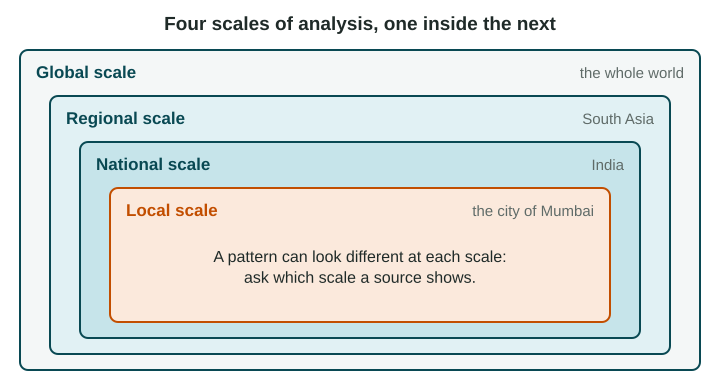

In the "Skills you need" chapter you learned the four scales of analysis and how to name a map's scale from the unit of its data. This topic asks the next question: what changes when you change the scale, and how do processes at one scale shape places at another?
Four scales, one inside the next

The global scale compares places across the whole world. The regional scale looks at a group of countries, such as South Asia. The national scale looks at one country. The local scale looks at part of a country: a state, province, city or neighborhood. A map of South Asia shaded by each country's World Bank income group (FY27) covers a region, but its data are national, one value per country.
Patterns change with scale
On that map, India is one shade: lower-middle income. At the local scale, the picture breaks apart. Income per person in the states of Goa and Kerala is far higher than in Bihar (in 2022-23, state income per person in Goa was about ten times that of Bihar, by the Government of India's Economic Survey 2023-24), and inside the city of Mumbai, high-rise towers stand next to crowded neighborhoods of small homes. None of these patterns is "the real one". Each is true at its own scale.
Elections show the same thing. A map of a United States presidential election colored by state shows large blocks of one color. A map of the same votes by county shows cities voting differently from the rural counties around them, a pattern hidden at the state scale.
Aggregated data
Aggregated data combine the values of smaller units into one value for a larger unit: districts into a province, provinces into a country, countries into a region. Aggregation is useful, because it makes comparison easy. But it hides variation. Brazil's national average rainfall is moderate, yet Manaus, in the Amazon, is very wet and parts of the northeast are dry. Using a national average to describe one city is a common mistake.
| Scale | Good for | Hides |
|---|---|---|
| Global | World patterns, such as where the richest and poorest countries are | Differences inside each country |
| Regional | Comparing neighbors, such as the countries of South Asia | Differences inside each country |
| National | Comparing whole countries; national policy | Differences between provinces and cities |
| Local | Where problems are inside a country or city | The bigger forces acting on the place |
Processes connect scales
Things that happen at one scale cause changes at another. Rising world demand for avocados led farmers in Michoacán, Mexico, to plant orchards on hillsides that had been forest: a global process with a local effect. Sea levels are rising around the world as the oceans warm and land ice melts, and Miami Beach, Florida, is raising streets and adding pumps: a global process met by a local response. A new port that links one coast to world shipping can raise jobs there and widen the gap with inland provinces.
Because each scale tells a different story, a national government and a city mayor can draw different, valid conclusions from the same data. The skill the exam rewards is naming the scale of every claim and explaining how scales connect.